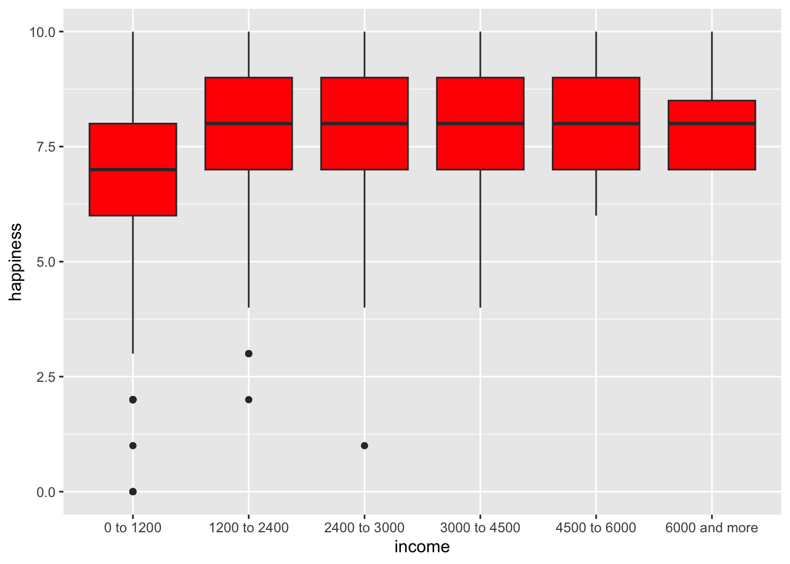

── Attaching core tidyverse packages ──────────────────────── tidyverse 2.0.0 ──
✔ dplyr 1.1.4 ✔ readr 2.1.5
✔ forcats 1.0.0 ✔ stringr 1.5.1
✔ ggplot2 4.0.0 ✔ tibble 3.3.0
✔ lubridate 1.9.4 ✔ tidyr 1.3.1
✔ purrr 1.1.0
── Conflicts ────────────────────────────────────────── tidyverse_conflicts() ──
✖ dplyr::filter() masks stats::filter()
✖ dplyr::lag() masks stats::lag()
ℹ Use the conflicted package (<http://conflicted.r-lib.org/>) to force all conflicts to become errors
library(knitr)library(kableExtra)
Attaching package: 'kableExtra'
The following object is masked from 'package:dplyr':
group_rows
library(descr)library(ggplot2)library(dbplyr)
Attaching package: 'dbplyr'
The following objects are masked from 'package:dplyr':
ident, sql
library(ggpubr)library(Rmisc)
Loading required package: lattice
Loading required package: plyr
------------------------------------------------------------------------------
You have loaded plyr after dplyr - this is likely to cause problems.
If you need functions from both plyr and dplyr, please load plyr first, then dplyr:
library(plyr); library(dplyr)
------------------------------------------------------------------------------
Attaching package: 'plyr'
The following object is masked from 'package:ggpubr':
mutate
The following objects are masked from 'package:dplyr':
arrange, count, desc, failwith, id, mutate, rename, summarise,
summarize
The following object is masked from 'package:purrr':
compact
library(lattice)library(plyr)
Import Data
happiness <-read.csv2("felicidadcis.csv")
Description:
Happiness: Numeric variable ranging from 0 to 10, representing the respondent’s level of happiness.
Income: Categorical variable representing income brackets:
1 to 6 = 0 to 1200 euros
7 = 1200 to 2400 euros
8 = 2400 to 3000 euros
9 = 3000 to 4500 euros
10 = 4500 to 6000 euros
11 = 6000 euros and more
Univariate Descriptive Analysis
data.df<-data.frame(happiness[1:2487,1:2]) #data frame(rectangular data structures)
Interpretation: The data are displayed in two separate groups of barcharts, so the overall distribution is not clearly visible. We can only observe that, for both the happiness and income variables, most values are as expected, although some high outliers (98 and 99) are present.
Interpretation: Through the frequency table, we can observe these anomalous values: 11 observations with a value of 98 and 14 with a value of 99 for happiness; and 258 with a value of 98 and 666 with a value of 99 for income. According to the CIS (Centro de Investigaciones Sociológicas), 98 usually indicates “No sabe / Don’t know” and 99 usually indicates “No contesta / No answer.” It is to be expected that for a sensitive question, such as income, people may prefer to abstain from answering.
Filter Out Outliers
Filtering data: For CIS, 98 usually indicates “No sabe / Don’t know” and 99 usually indicates “No contesta / No answer”.
Interpretation: Now we can see the distributions more clearly. For happiness, the highest density is concentrated in the upper-middle values (5 to 10), although there are some observations with low values. The distribution appears to be left-skewed. For income, we observe a roughly symmetric distribution, with the highest density in the middle values (5 to 7).
Numerical Measures for Happiness
data_df_summary <-data %>%summarise_at(vars(happiness:Income), # variables from happiness to incomelist(avg=mean, std=sd)) # you can include more measuresdata_df_summary
Interpretation: The average happiness is 7.43, indicating that people are moderately happy. The average income is 5.9, which corresponds approximately to 1,200 euros.
Interpretation: From the boxplots, we can confirm the negative skew (left-skew) of the happiness variable, as well as the symmetry of income. There are 7 outliers for happiness and 2 for income.
Bivariate Descriptive Analysis
Contingency Tables - Joint Absolute Frequencies
# group Incomedataincome<-case_when((data$Income<=6) ~"0 to 1200", (data$Income<=7) ~"1200 to 2400", (data$Income==8) ~"2400 to 3000", (data$Income==9) ~"3000 to 4500", (data$Income==10) ~"4500 to 6000", (data$Income==11) ~"6000 and more")ConTtable<-table(dataincome,data$happiness)#Joint absolute frequenciesConTtable
Interpretation: We can see that most people are concentrated in the upper-right section of the contingency table. This corresponds to individuals who are moderately happy and have low to moderate incomes.
dataincome 0 1 2 3 4 5 6 7 8
0 to 1200 0.322 0.064 0.580 1.483 1.483 7.350 8.511 13.862 16.248
1200 to 2400 0.000 0.000 0.064 0.193 0.064 0.709 1.225 4.320 5.029
2400 to 3000 0.000 0.064 0.000 0.000 0.064 0.645 0.709 2.192 3.417
3000 to 4500 0.000 0.000 0.000 0.000 0.064 0.129 0.322 1.418 2.772
4500 to 6000 0.000 0.000 0.000 0.000 0.000 0.000 0.258 0.516 0.580
6000 and more 0.000 0.000 0.000 0.000 0.000 0.000 0.000 0.258 0.258
dataincome 9 10
0 to 1200 6.705 8.769
1200 to 2400 2.192 1.741
2400 to 3000 1.676 0.774
3000 to 4500 1.289 0.838
4500 to 6000 0.451 0.193
6000 and more 0.064 0.129
RConTtable
dataincome 0 1 2 3 4
0 to 1200 0.32237266 0.06447453 0.58027079 1.48291425 1.48291425
1200 to 2400 0.00000000 0.00000000 0.06447453 0.19342360 0.06447453
2400 to 3000 0.00000000 0.06447453 0.00000000 0.00000000 0.06447453
3000 to 4500 0.00000000 0.00000000 0.00000000 0.00000000 0.06447453
4500 to 6000 0.00000000 0.00000000 0.00000000 0.00000000 0.00000000
6000 and more 0.00000000 0.00000000 0.00000000 0.00000000 0.00000000
dataincome 5 6 7 8 9
0 to 1200 7.35009671 8.51063830 13.86202450 16.24758221 6.70535139
1200 to 2400 0.70921986 1.22501612 4.31979368 5.02901354 2.19213411
2400 to 3000 0.64474533 0.70921986 2.19213411 3.41715023 1.67633785
3000 to 4500 0.12894907 0.32237266 1.41843972 2.77240490 1.28949065
4500 to 6000 0.00000000 0.25789813 0.51579626 0.58027079 0.45132173
6000 and more 0.00000000 0.00000000 0.25789813 0.25789813 0.06447453
dataincome 10
0 to 1200 8.76853643
1200 to 2400 1.74081238
2400 to 3000 0.77369439
3000 to 4500 0.83816892
4500 to 6000 0.19342360
6000 and more 0.12894907
The interpretation is the same, but using percentages. For example, we can say that 16.24% of the people have an income of 0-1200 euros and a happiness level of 8.
Interpretation: We observe that most people are moderately to very happy. The mode is 8.
rowSums(RConTtable)#Marginal relative frequencies for Income
0 to 1200 1200 to 2400 2400 to 3000 3000 to 4500 4500 to 6000
65.3771760 15.5383623 9.5422308 6.8343005 1.9987105
6000 and more
0.7092199
Interpretation: The mode, as well as the majority (65.4%) of people, corresponds to a low income (0 to 1,200 euros).
Contingency Tables - Conditional Frequencies
CConTtableG<-prop.table(ConTtable,margin=2)*100#Conditional of Income for fixed happinessCConTtableG
dataincome 0 1 2 3 4
0 to 1200 100.0000000 50.0000000 90.0000000 88.4615385 88.4615385
1200 to 2400 0.0000000 0.0000000 10.0000000 11.5384615 3.8461538
2400 to 3000 0.0000000 50.0000000 0.0000000 0.0000000 3.8461538
3000 to 4500 0.0000000 0.0000000 0.0000000 0.0000000 3.8461538
4500 to 6000 0.0000000 0.0000000 0.0000000 0.0000000 0.0000000
6000 and more 0.0000000 0.0000000 0.0000000 0.0000000 0.0000000
dataincome 5 6 7 8 9
0 to 1200 83.2116788 77.1929825 61.4285714 57.4031891 54.1666667
1200 to 2400 8.0291971 11.1111111 19.1428571 17.7676538 17.7083333
2400 to 3000 7.2992701 6.4327485 9.7142857 12.0728929 13.5416667
3000 to 4500 1.4598540 2.9239766 6.2857143 9.7949886 10.4166667
4500 to 6000 0.0000000 2.3391813 2.2857143 2.0501139 3.6458333
6000 and more 0.0000000 0.0000000 1.1428571 0.9111617 0.5208333
dataincome 10
0 to 1200 70.4663212
1200 to 2400 13.9896373
2400 to 3000 6.2176166
3000 to 4500 6.7357513
4500 to 6000 1.5544041
6000 and more 1.0362694
CConTtableM<-prop.table(ConTtable,margin=1)*100#Conditional of happiness for fixed IncomeCConTtableM
dataincome 0 1 2 3 4
0 to 1200 0.49309665 0.09861933 0.88757396 2.26824458 2.26824458
1200 to 2400 0.00000000 0.00000000 0.41493776 1.24481328 0.41493776
2400 to 3000 0.00000000 0.67567568 0.00000000 0.00000000 0.67567568
3000 to 4500 0.00000000 0.00000000 0.00000000 0.00000000 0.94339623
4500 to 6000 0.00000000 0.00000000 0.00000000 0.00000000 0.00000000
6000 and more 0.00000000 0.00000000 0.00000000 0.00000000 0.00000000
dataincome 5 6 7 8 9
0 to 1200 11.24260355 13.01775148 21.20315582 24.85207101 10.25641026
1200 to 2400 4.56431535 7.88381743 27.80082988 32.36514523 14.10788382
2400 to 3000 6.75675676 7.43243243 22.97297297 35.81081081 17.56756757
3000 to 4500 1.88679245 4.71698113 20.75471698 40.56603774 18.86792453
4500 to 6000 0.00000000 12.90322581 25.80645161 29.03225806 22.58064516
6000 and more 0.00000000 0.00000000 36.36363636 36.36363636 9.09090909
dataincome 10
0 to 1200 13.41222880
1200 to 2400 11.20331950
2400 to 3000 8.10810811
3000 to 4500 12.26415094
4500 to 6000 9.67741935
6000 and more 18.18181818
Interpretation: In particular, from the second table (happiness | income), we observe that as income increases, the occurrence of low happiness values drops to zero: money contributes to happiness. However, there are also people who are very happy without much money.
Box plot for Conditional Distribution of Happiness (Fixed Income)
dataincome<-as.character(dataincome)group<-tibble(happiness = data$happiness, income = dataincome) # Creates a dataframeggplot(group, mapping =aes(x = income, y = happiness)) +geom_boxplot(fill="Red")

Interpretation: From the boxplots, we observe that the medians are similar, but the lowest happiness values tend to disappear as income increases. Happiness becomes increasingly concentrated (less dispersed) at higher values as income rises.
Conditional mean, median and sd for happiness, fixed income
datagrouped <-group_by(group, income) # It facilitates operations such as summarise().head(datagrouped) # show first 6 rows
# A tibble: 6 × 2
# Groups: income [3]
happiness income
<int> <chr>
1 8 0 to 1200
2 8 2400 to 3000
3 9 2400 to 3000
4 9 1200 to 2400
5 10 2400 to 3000
6 8 1200 to 2400
# A tibble: 6 × 4
income avg stde median
<chr> <dbl> <dbl> <dbl>
1 0 to 1200 7.26 1.86 7
2 1200 to 2400 7.69 1.43 8
3 2400 to 3000 7.68 1.41 8
4 3000 to 4500 8.04 1.19 8
5 4500 to 6000 7.90 1.19 8
6 6000 and more 8.09 1.14 8
Interpretation: We can observe that happiness tends to increase with income, although not by much. More importantly, the variability decreases, as we have seen in previous analyses.
Confidence Intervals
[FUNCTION]
Confidence interval for the population mean (unknown variance)
If we construct 100 confidence intervals, the population mean will fall within approximately 95 of them. We are 95% confident that the population mean lies within the confidence interval (7.35 , 7.52).
[FUNCTION]
Confidence interval for the population proportion in a Bernoulli distribution.
If we construct 100 confidence intervals, the population proportion of people that give 7 or more to happiness will fall within approximately~ 95 of them. We are 95% confident that the population proportion of people that give 7 or more to happiness lies within the confidence interval (0.736 , 0.778).
Plots of CI
Plot 95% confidence intervals for ‘happiness’ divided by categories of income. Function “summarySE” in the library Rmisc allow us to summarise one variable divided in groups.
graf.interval <- graf.point +geom_errorbar(aes(ymin=happiness-ci, ymax=happiness+ci), width =0.2) +ylab("happiness") +ggtitle("95% Confidence interval for the mean of happiness by income")graf.interval